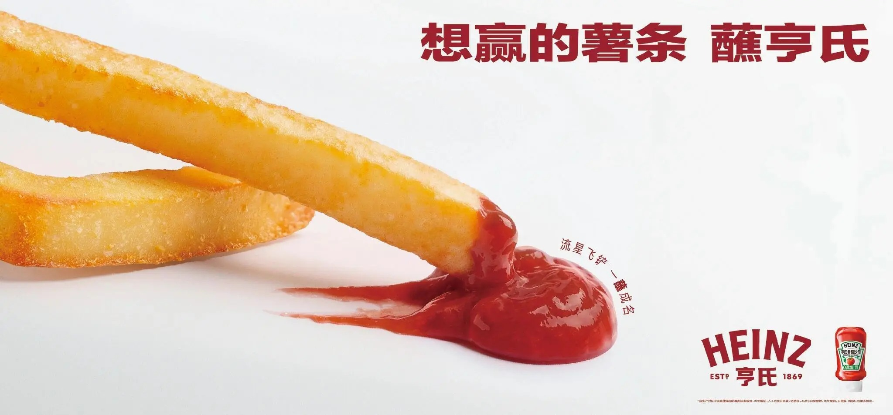
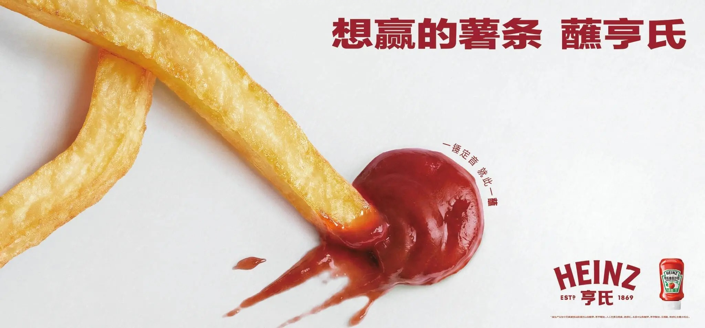
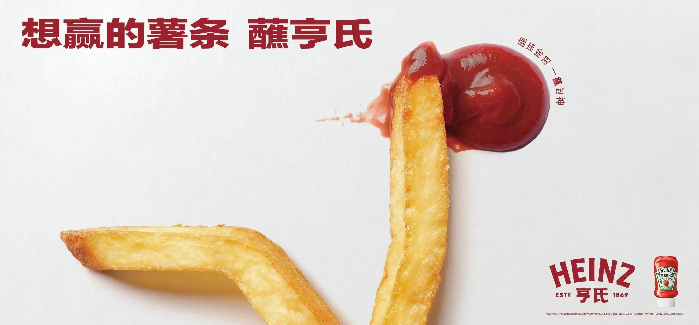
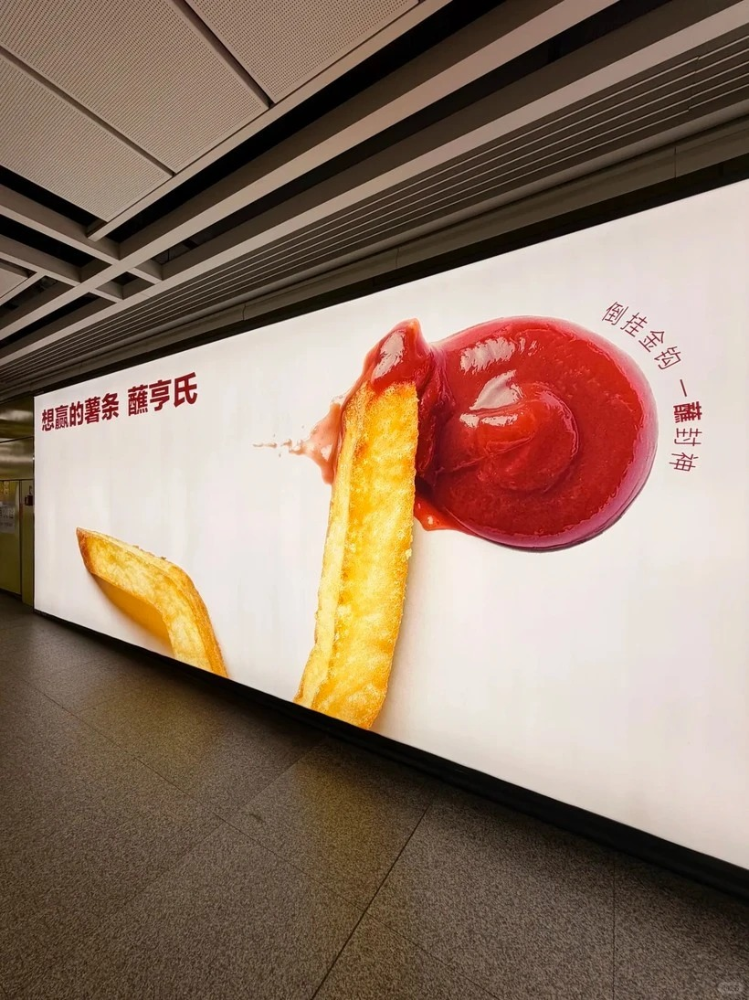
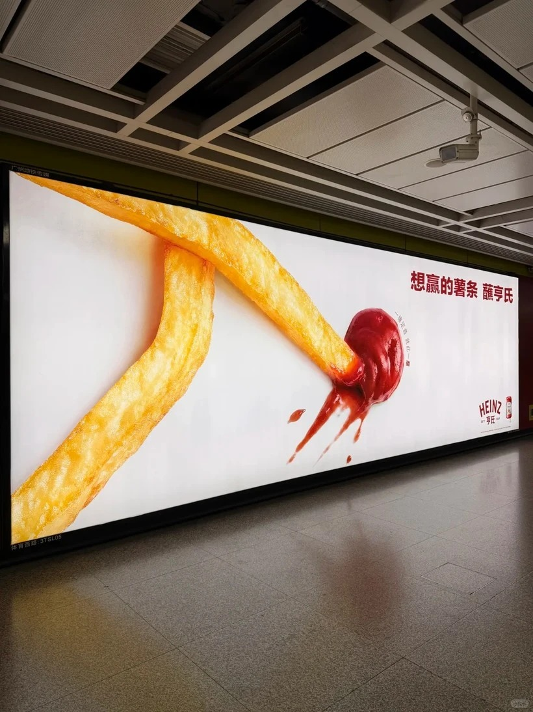
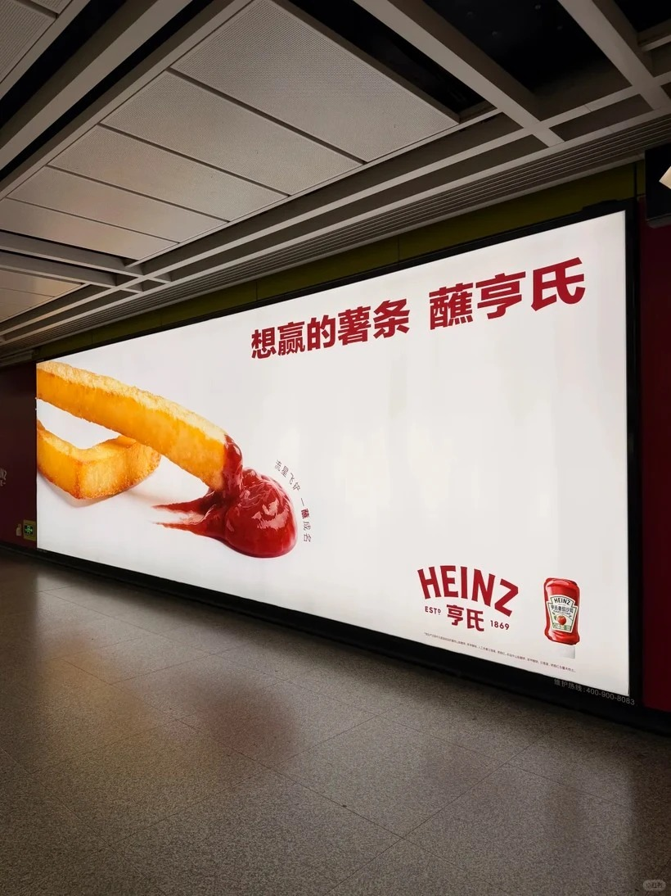

案例发生了什么



Heinz 在 2026 世界杯期间以薯条模拟球员双腿、以番茄酱模拟足球，在户外平面中演绎一锤定音、倒挂金钩和流星飞铲，并用“想赢的薯条，蘸亨氏”把赛事胜利感落回薯条与番茄酱的产品搭配。
当前线索记录显示，这项动作由Heinz发起，发生在全球创意与非官方突围；城市户外 / 产品形状借位，主要通过社交互动与平台内容；赛场或线下空间执行抵达受众。执行过程可以连成一条完整路径：先“城市户外 / 产品形状借位”建立进入世界杯讨论的明确资格；随后把“让薯条成为球员双腿、番茄酱成为足球，把产品搭配直接演成足坛动作”落实到户外平面、城市媒介、SocialBeta 二次传播、小红书原帖与餐饮搭配场景，避免只停留在赛事口号；最后面向城市通勤人群、快餐消费者、轻度球迷与社交内容用户设计看见、参与与行动三层触点；再复盘时按户外到达、注意度、拍照分享、品牌搜索、餐饮连带消费与社交互动拆开记录，不把曝光直接等同于业务效果。这些动作共同服务于“让薯条成为球员双腿、番茄酱成为足球，把产品搭配直接演成足坛动作”，让页面能够区分参与主体、传播载体、用户接触点和品牌最终想留下的认知。
动作顺序：以“城市户外 / 产品形状借位”建立进入世界杯讨论的明确资格；把“让薯条成为球员双腿、番茄酱成为足球，把产品搭配直接演成足坛动作”落实到户外平面、城市媒介、SocialBeta 二次传播、小红书原帖与餐饮搭配场景，避免只停留在赛事口号；面向城市通勤人群、快餐消费者、轻度球迷与社交内容用户设计看见、参与与行动三层触点；复盘时按户外到达、注意度、拍照分享、品牌搜索、餐饮连带消费与社交互动拆开记录，不把曝光直接等同于业务效果。
当前资料边界：已核（SocialBeta 创意与素材；投放及效果待补）；已归档 6 张 SocialBeta 案例页真实创意图。页面只把已经记录的参与路径和动作写成事实，未取得一手材料的执行细节、投放规模与效果不作推定。
营销启发卡
用三张卡片保留最值得记住、讨论和迁移的部分。 卡片底部按主题连接全站相关案例、经典方法与深度文章。
以“城市户外 / 产品形状借位”建立进入世界杯讨论的明确资格
以“城市户外 / 产品形状借位”建立进入世界杯讨论的明确资格；把“让薯条成为球员双腿、番茄酱成为足球，把产品搭配直接演成足坛动作”落实到户外平面、城市媒介、SocialBeta 二次传播、小红书原帖与餐饮搭配场景，避免只停留在赛事口号。
让薯条成为球员双腿、番茄酱成为足球
以“城市户外 / 产品形状借位”为资源起点，进入户外平面、城市媒介、SocialBeta 二次传播、小红书原帖与餐饮搭配场景；结果优先观察户外到达、注意度、拍照分享、品牌搜索、餐饮连带消费与社交互动，不把曝光直接等同于销售。
非官方借势不必借用赛事标识
非官方借势不必借用赛事标识；当产品形状与体育动作天然同构时，产品本身就能完成赛事翻译。
适用条件、风险与证据
- 切口必须与产品真实使用场景有关，否则容易变成蹭热度。
- 节奏上要靠近球迷讨论时刻，但不需要强行追每一场赛果。
- 对文化、肖像和赛事知识产权做独立审核。
品牌与权威来源物料
这里只展示可追溯到品牌、权利方、官方账号或明确注明原始出处的真实物料；研究图卡不计入案例图片。



官方资料、结果数据与下一步
已验证事实
- SocialBeta 于 2026 年 6 月 11 日发布该案例，明确创意以薯条模拟球员双腿、以番茄酱模拟足球，并呈现一锤定音、倒挂金钩与流星飞铲等动作。
- “想赢的薯条，蘸亨氏”没有使用世界杯官方标识，而是把产品形状、足球动作与薯条蘸番茄酱的食用关系压缩进同一幅平面。
- 本页 6 张图均直接取自用户指定的 SocialBeta 案例页，包含 3 张横版和 3 张竖版系列物料，不使用生成图替代。
可追溯的结果
- 公开页面没有披露投放城市、媒体点位、投放周期、到达人数、社交互动、品牌搜索或销售变化；目前只能确认创意和素材，不能判断商业效果。
原始来源
来源链接优先指向品牌、权利方或持权媒体官方页面；品牌自述数据按原始定义记录，不视作独立审计结果。